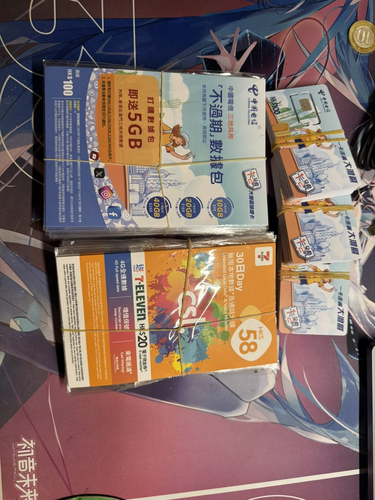

嫣敏🍥（主页抽奖进行中）
@yanmin1105
国行新iPhone18Pro还是两个物理卡槽，内地不可写外卡，「实体卡」依旧是兼顾实用性和快速更换的好选择
不被运营商背刺，不像CTExcel一样难以激活
需要外卡，快来看看香港电话卡吧
CSL有低廉的保号成本，大湾区蓝卡有优质的漫游和通话套餐组合
卡片自带话费余额，使用随心，按需付费，没有月费的负担，亦可永久保号
大量现货，内地轻松激活，无需各种操作，只需简单操作，即可畅快使用
